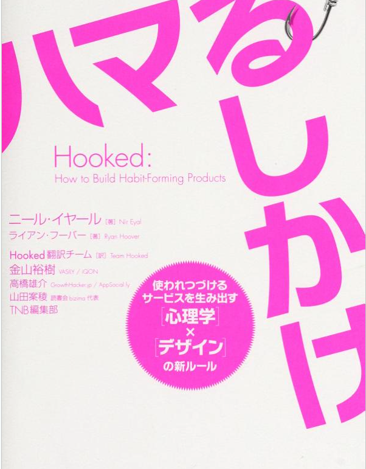
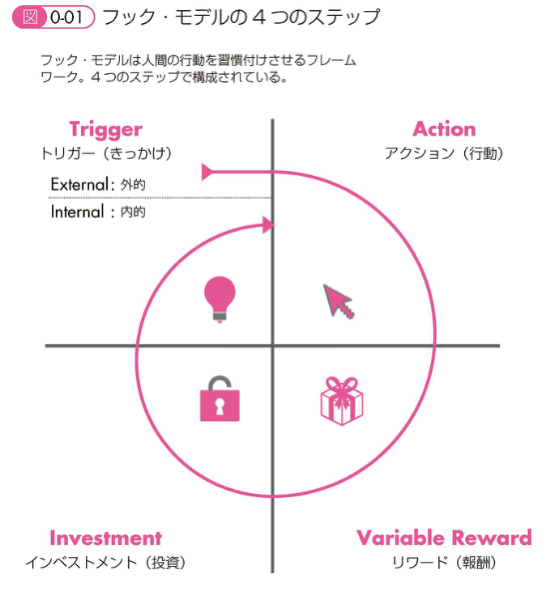
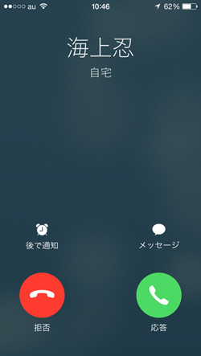

<!-- <font color="chocolate">文字色</font> --> <!-- <img src="./img/sample" width="70%" alt=""> -->  ---- 当たり前 のことを 言語化 ----  ---- Trigger （きっかけ） ---- きっかけ ・外的トリガー ・内的トリガー ---- ・外的トリガー 広告 口コミ 通知 ---- ・内的トリガー 精神的なもの ex. さみしさ ---- ---- Action （行動） ---- 行動の要因 ・十分なモチベーション ・十分な能力 ・トリガーの存在 ----  ---- 大事なことは <font color="red">簡易</font>にすること ---- ・Twitterボタンの共有 ・Googleでの検索 ・Amazonでの購入 ---- ---- Variable Reward （報酬） ---- 報酬の種類 ・トライブ（社会的） ・ハント（物理的） ・セルフ（自己満足） ---- トライブ（社会的） ・誰かと繋がる ex. Twitter ex. facebook ex. stackOverflow ---- ハント（物理的） ・情報を追うこと ex. Twitter ---- セルフ（自己満足） ・ToDoリスト ・ジグソーパズル ・100万のタマゴ ---- ---- Investment （投資） ---- 認知的 不協和 の回避 ---- ex. IKEA ---- 使えば 使うほど 好きになる ---- ex. Twitter ---- 応用 ---- 電卓 アプリ ---- ---- お わ り